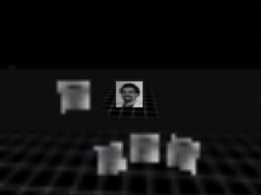
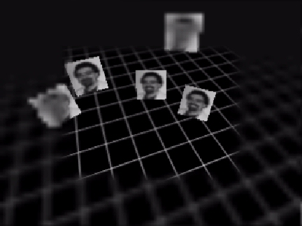
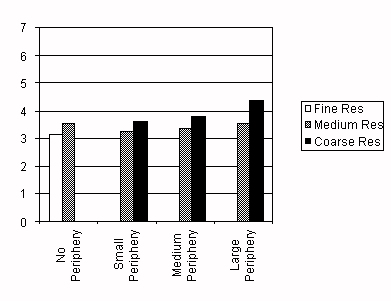
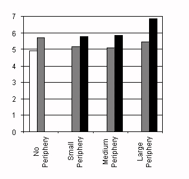

Effectiveness of Spatial Level of Detail Degradation
in the Periphery of Head-Mounted Displays
Benjamin Watson, Neff Walker & Larry F. Hodges
- Graphics, Visualization & Usability Center
- Georgia Institute of Technology
- 801 Atlantic Drive, Atlanta, GA 30332-0280, USA
- tel: +1 404 894 8787; email: watsonb@cc.gatech.edu
ABSTRACT
Many researchers have proposed degradation of peripheral visual detail as a technique that can both improve frame rates in virtual environments systems, and minimize perceptual impact. A user study was performed to evaluate the effectiveness of this technique when used with head-mounted displays. Primary dependent measures were search time on correctly performed trials and percentage of all trials performed incorrectly. Results showed that a substantial amount of peripheral detail can be eliminated before user performance is impacted. The performance impact of peripheral detail degradation will vary greatly with task difficulty, although it should be useful even in the most taxing environments.
KEYWORDS:
Immersive virtual environments, virtual reality, level of detail, head-mounted displays, usability, search.
INTRODUCTION
As virtual environments (VE) researchers attempt to broaden the range of applications for VE technology, they are attempting to display ever larger and more complex models. Many of these models, however, cannot be displayed with acceptable frame rates or latencies in current systems. Foremost among the proposed solutions to this problem is the idea of varying "level of detail" (LOD). In order to vary LOD, different LODs must first be generated, perhaps using techniques such as those outlined by Rossignac & Borrel [2], and then dynamically managed and applied, using systems such as those designed by Funkhauser & Séquin [1]. Both of these systems degrade LOD in the periphery of the visual field.
We performed a user study evaluating LOD management through peripheral detail degradation in head-mounted displays (HMDs). Because the focus of this study is LOD management and not LOD generation, we chose to generate LODs by simply varying display resolution. Moreover, because currently available eye tracking technology is unwieldy and expensive, we worked under the assumption that head-tracking alone would allow effective peripheral degradation.
METHOD
We used a Virtual Research Flight Helmet with a Silicon Graphics Reality Engine II Onyx to display our virtual experimental environment. A Polhemus Isotrak system tracked our subjects' head motions. Subjects stood within a wooden platform with railings, ensuring that they remaining within a 3' radius of the tracker transmitter.
In our study, we degraded detail across three different visual extents, using two different degrees of degraded LOD (see figures 1 and 2). We compared these six different types of displays to three evenly degraded displays with three different LODs. Using each of these displays, eleven subjects searched for a unique object located randomly about them among several distractors, and identified the presence or absense of a certain unique object. After focussing on a home object, subjects pressed a button, and several objects appeared outside the subject's view. Subjects scanned the objects and pressed one of two buttons to indicate if the unique obect was present or absent. Onscreen feedback was provided indicating the length of the search, and whether or not it had been performed correctly. Subjects then turned back to the home object to begin a new trial.
The number of objects that appeared in the search space was either one, three or five. Each of these levels was used in equally. The unique object appeared in half of all trials. Object were never located in or to the left of the view in home position (looking at the home object). The remaining search space was divided into four regions, to allow control of object location effects. In half of the cases, all objects were clustered into one such region, in the remaining cases, objects were spread randomly and evenly across as many regions as possible. The unique object appeared an equal number of times in each region. Other controlled variables included frame rate, order of display usage, and button usage.

Figure 1: View of search space with large periphery, coarse resolution. Unique object is center of lower 3.

Figure 2: View of search space with small periphery, coarse resolution. Unique object is second from left.
RESULTS
As dependent measures, we used accuracy of identification of the unique object, and search time in trials with correct identifications. Accuracy results for the coarse resolution, evenly degraded display indicated subjects were performing at chance levels. Accuracy results for all other displays did not differ significantly and were all at 95% or larger. Search time results for these remaining displays are graphed in figures 3 and 4. When a unique object was present, display type by region ANOVA indicated significant effects of display type and region (p < .001), without significant interaction. Bonferroni pair-wise comparisons revealed that the small and medium periphery medium resolution displays did not significantly differ from the undegraded fine resolution display. A 3 x 2 ANOVA of peripherally degraded displays by resolution and periphery extent indicated significant effects for both variables, as well as an interaction. Search times when the unique object was absent were significantly longer, but generally similar.
Results indicate that peripheral LOD degradation is a useful compromise. With an evenly degraded coarse display, subject simply could not perform the task, while they could with all other displays. Two medium resolution, peripherally degraded displays did not significantly differ from the undegraded, fine resolution display. In an earlier study with a simpler task [3], the effects of resolution and periphery extent were not nearly as significant as those in this study, indicating that the effectiveness of peripheral LOD degradation is highly task dependent. The fact that these results were achieved without eye tracking is particularly interesting, and suggests that eye tracking may be of limited importance in HMDs when the low LOD periphery is not extremely large.

Figure 3: Search time in seconds by display, in trials with unique object present.

Figure 4: Search time in seconds by display, in trials with unique object absent.
REFERENCES
- Funkhauser, T. & Séquin, C. Adaptive display algorithm for interactive frame rates during visualization of complex virtual environments, in Proc. SIGGRAPH 93 Conf. (Anaheim, August, 1993), ACM Press, 247-254.
- Rossignac, J. & Borrel, P. Multi-resolution 3D approximations for rendering complex scenes, in IBM Research Report RC 17697 (#77951), (February 1992), Yorktown Heights, NY 10598. Also appeared in the IFIP TC 5.WG 5.10 II Conf. on Geometric Modelling in Computer Graphics (Genova, Italy, 1993).
- Watson, B., Walker, N. & Hodges, L. A user study evaluating level of detail degradation in the periphery of head-mounted displays, in Proc. Framework for Interactive Virtual Environments Conf., (London, Dec. 18-19, 1995).